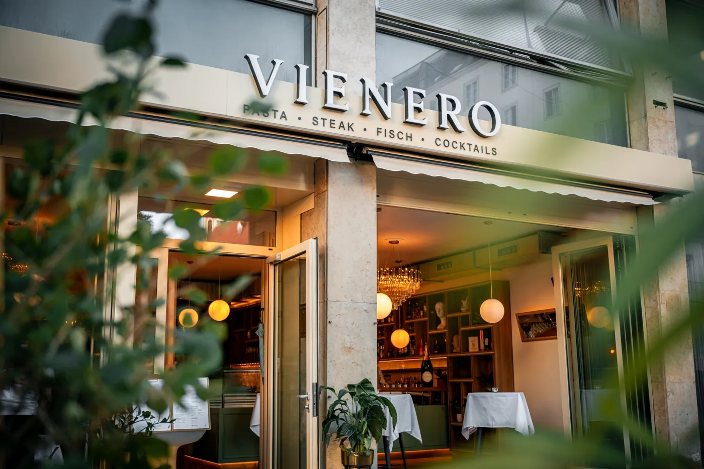
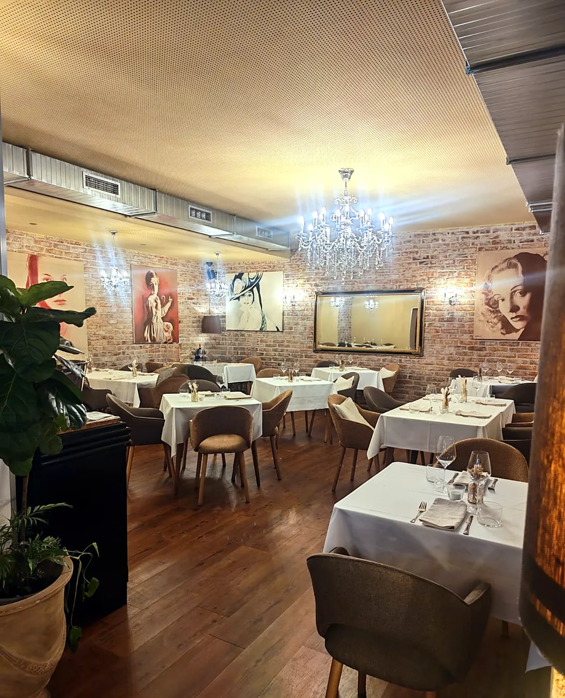
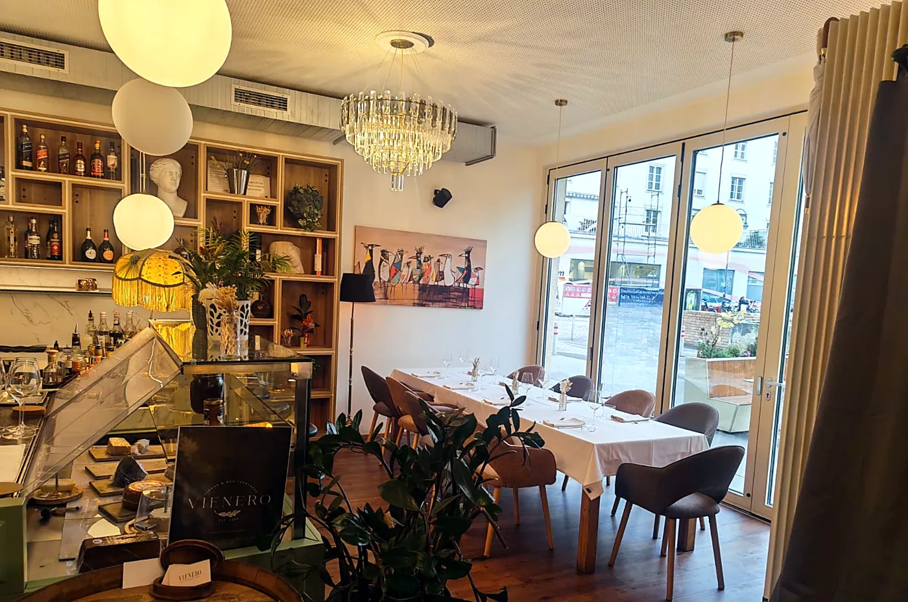
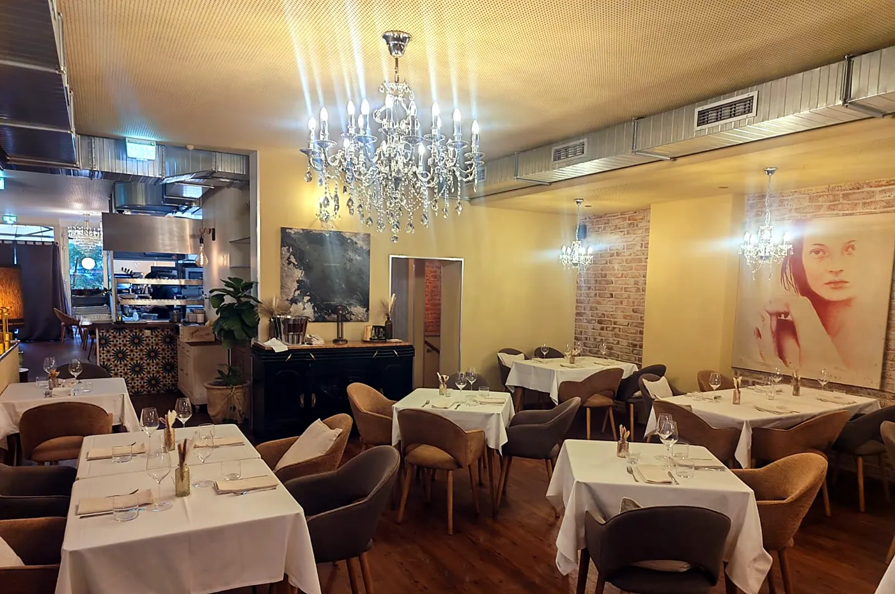
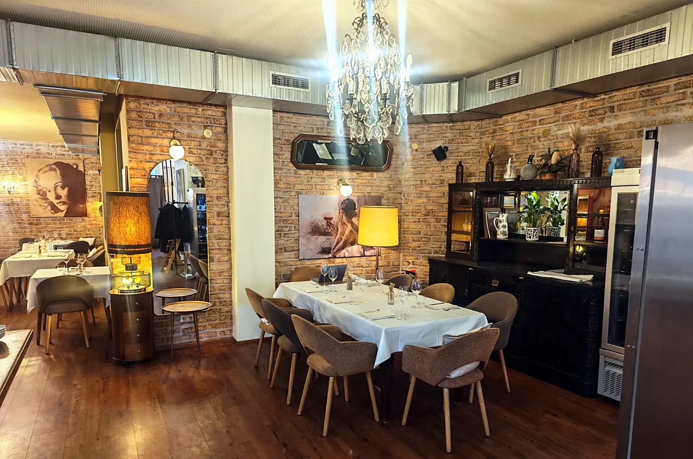
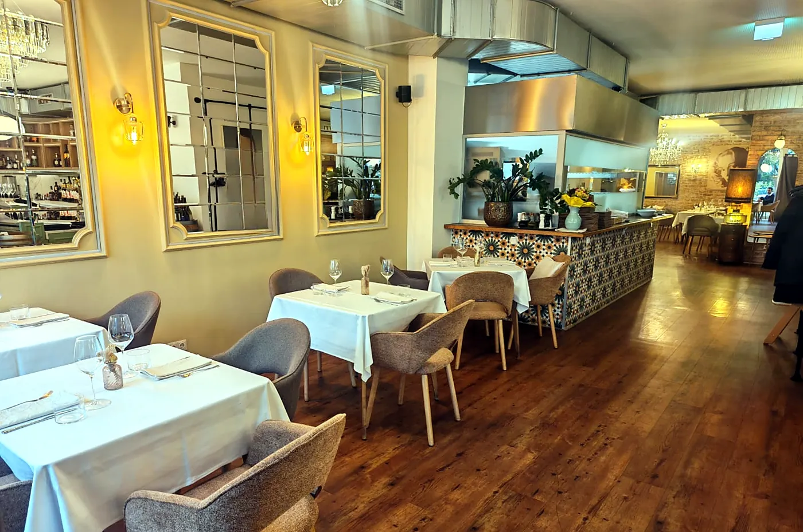
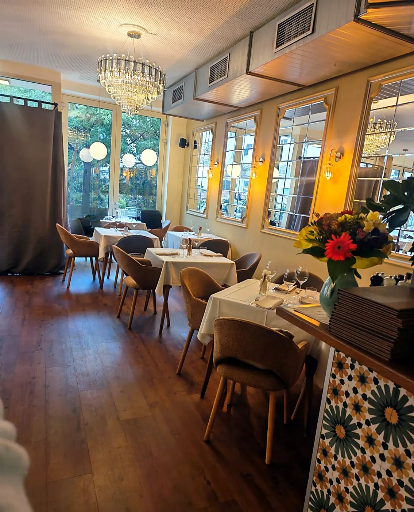
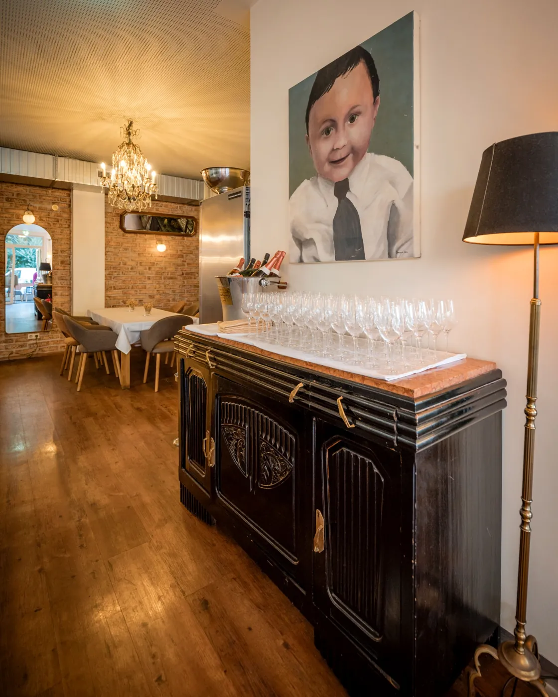
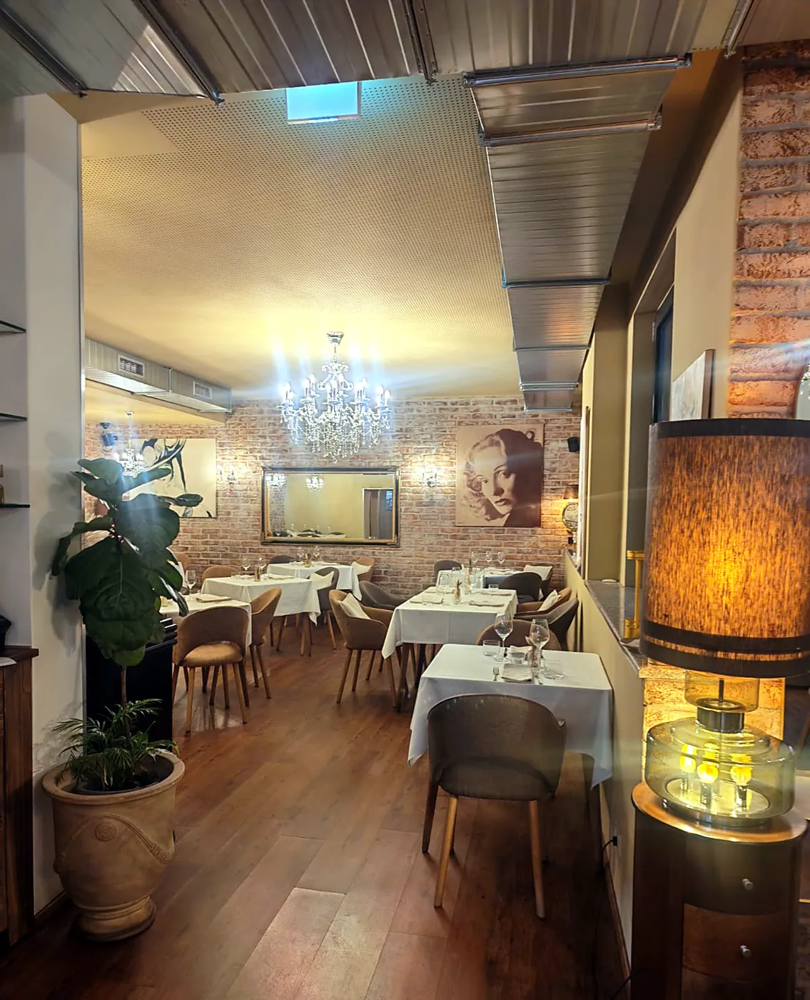

Group dining in Vienna
Planning a dinner for your team, your clients or a travelling group? VIENERO is two minutes on foot from the Hilton Vienna Park, directly at the Stadtpark in the 1st district. We host groups from 10 guests up to 70 guests with exclusive use of the whole restaurant, with the classic Wiener Schnitzel, Mediterranean dishes and a bar serving cocktails until midnight.



★ 4.4 on Google · more than 1,500 reviews · English menu with photos · vegetarian, vegan and gluten free options
Who we host
- Tour operators and coach groups: fixed group menus, free meals for guide and driver, coach drop off directly on the Ring.
- Event agencies and corporate clients: team dinners, client events and incentives, with private rooms or exclusive use of the restaurant.
- Hotels and concierges: two minutes from the Hilton Vienna Park, close to the Marriott, InterContinental and Radisson on the Ring.
- Private celebrations: birthdays, weddings, anniversaries and family dinners.
Group sizes
A room with an adjoining room side by side for up to 50 guests, or the whole restaurant exclusively for up to 70 guests.
The rooms






Floor plan
Simplified plan for orientation. Tables are arranged to suit your group, as one long table, several tables or a standing reception.
Sample group menu
Starter
Burrata with oven roasted tomatoes
or
Vitello tonnato
or
Onion soup with mozzarella croûtons
Main course
Wiener Schnitzel with parsley potatoes
or
Grilled salmon on saffron risotto
or
Wild mushroom risotto (vegetarian)
Dessert
Warm chocolate soufflé with vanilla ice cream
or
Tiramisu
Price
60 euros per person, excluding drinks


We are happy to tailor the menu, including vegan, gluten free and other dietary requirements. Drinks packages, a champagne reception, music or a DJ on request.
See our dishes in our menu with photos.
Our current menu
Besides the set group menu, your group can enjoy dishes from our current menu. Prices in euros.
Starters
Onion soup13,00
Snails16,90
Truffle wild broccoli17,90
Burrata and oven roasted tomatoes18,90
VIENERO beef tartare21,90
Vitello tonnato21,90
Goat cheese salad17,90
Pasta and risotto
Pasta al tartufo29,90
Pasta alle zucchine e pistacchio27,90
Pasta frutti di mare29,90
Ratatouille lasagne23,90
Wild mushroom risotto23,90
From the sea
Whole grilled sea bass33,90
Fish soup à la bouillabaisse32,90
Salmon steak saffron29,90
Classic mussels23,90
Wiener Schnitzel and grill
Wiener Schnitzel29,90
Ribeye steak 300 g43,90
Fillet steak 200 g / 250 g39,90
Lamb fillet, date and rosemary31,90
Desserts
Chocolate soufflé11,90
Tiramisu Leopard11,90
Crème brûlée12,90
Bar
Aperitifs and signature cocktails11,90
Weddings, birthdays, seminars and private events
- Weddings: wedding dinners, receptions and celebrations, up to 70 guests with exclusive use of the restaurant.
- Seminars and company events: lunch or dinner after your seminar, team events, client evenings, Christmas parties and incentives.
- Birthdays: birthday dinners and parties, from a long table for 10 to the whole restaurant for 70 guests.
- Private celebrations: anniversaries, engagements, family dinners and other private events.
We organise the extras for you
Tell us your plans and we put together a complete offer for your event.
New Year's Eve for groups
Bring your group to celebrate the New Year in Vienna: a festive menu with oyster and caviar, Bouillabaisse Royale with lobster and a choice of beef fillet Rossini, turbot, saddle of veal or black truffle risotto, a glass of champagne at midnight and a party with a DJ until 2 am. 169 euros per person, excluding drinks. Private rooms for up to 50 guests. See the full New Year's Eve menu.
Coming in 2027: the Belletage
Next year we open a second venue in the old town, opposite the Ronacher theatre: a small palais with an elegant Belletage for up to 90 guests. A very exclusive setting for Viennese evenings with multi course menus, private events and themed nights, with packages combining dinner, concerts and theatre. Tour operators and agencies are welcome to develop special programmes with us.
Good to know
- Group menu: groups of 10 guests and more choose from the group menu.
- Pre-order: for groups of 20 guests and more we kindly ask for the final menu choices 10 days before the event.
- Payment: we work with prepayment. After confirming the booking you receive a secure electronic payment link.
- Guide and driver: with your booking, guide and driver are our guests and dine free of charge.
- Coaches: drop off directly on the Ring at Stubentor, a few steps from the door.
- Opening hours: daily from noon to midnight, kitchen until 10 pm. From 1 February 2027 daily from 4 pm, kitchen until 11 pm. Earlier times for groups on request.
- Location: Dr.-Karl-Lueger-Platz 3, 1010 Vienna. Hilton Vienna Park two minutes, St. Stephen's Cathedral ten minutes on foot, U3 Stubentor at the door, Konzerthaus and Musikverein within walking distance.
- Reviews: rated 4.4 on Google with more than 1,500 reviews.
How to book
Send us the date, time and number of guests and we will reserve the space and prepare a tailored offer, usually within 24 hours.
Questions
How many guests can VIENERO host?
We welcome groups of 10, 15, 18, 20, 25, 30 or 40 guests, and up to 70 guests with exclusive use of the whole restaurant.
How much is the group menu?
Our three course group menu is 60 euros per person, excluding drinks. Drinks packages are available on request.
Do guests need to pre-order?
Groups of 10 guests and more choose from the group menu. For groups of 20 guests and more we kindly ask for the final menu choices 10 days before the event.
Do you require a deposit?
We work with prepayment. After confirming the booking you receive a secure electronic payment link.
Do you have private dining?
Yes. We have a separate area for groups, and for up to 70 guests the whole restaurant can be booked exclusively.
How far is VIENERO from the Hilton Vienna Park?
About two minutes on foot. VIENERO is at Dr.-Karl-Lueger-Platz 3, directly at the Stadtpark, with the U3 station Stubentor in front of the door.
Are guide and driver free of charge?
Yes. With your booking, guide and driver are our guests and dine free of charge.
Do you offer New Year's Eve for groups?
Yes. Our New Year's Eve menu with champagne at midnight and a DJ party until 2 am is 169 euros per person excluding drinks, with private rooms for up to 50 guests.
Can a coach stop at the restaurant?
Yes. Coaches can drop off directly on the Ring at Stubentor, a few steps from VIENERO.